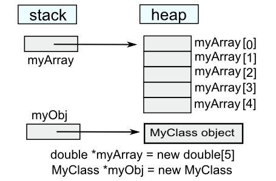
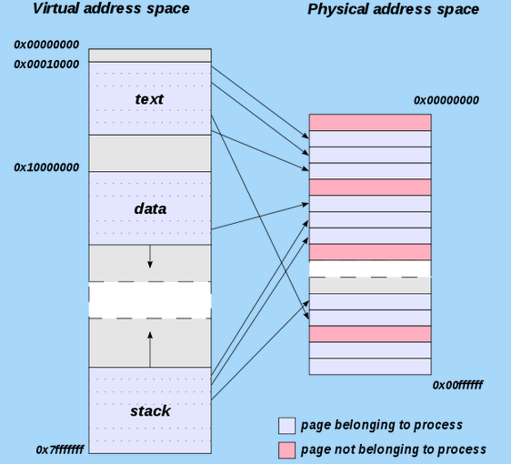

C++ Tutorial - Memory Allocation - 2017
Variables represent storage space in the computer's memory. Each variable presents a convenient names like number or result in the source code. Behind the scenes at runtime, each variable uses an area of the computer's memory to store its value.
However, not every variable in a program has a permanently assigned area of memory, instead, modern languages are smart about giving memory to a variable only when necessary. When we use the term allocate, we indicate that the variable is given an area of memory to store its value. A variable is deallocated when the system reclaims the memory from the variable, so it no longer has an area to store its value.
For a variable, the period of time from its allocation until its deallocation is called its lifetime. The most common memory related error is using a deallocated variable. For local variables, modern languages automatically protect against this error. In other words, most of the time, the local variables appear automatically when we need them, and they disappear automatically when we are done with them. With pointers, however, programmers must make sure that allocation is handled correctly.
The most common variables we use are local variables within functions such as the variables number and result in the following function. All of the local variables and parameters taken together are called its local storage or just its locals:
// Local storage example
int Square(int number) {
int result;
result = number * number;
return result;
}
The variables are called local to represent the idea that their lifetime is tied to the function where they are declared. Whenever the function runs, its local variables are allocated. When the function exits, its locals are deallocated.
For the above example, that means that when the Square() function is called, local storage is allocated for number and result. When the function finally exits, its local storage is deallocated.
Locals 101:
- When a function is called, memory is allocated for all of its locals. In other words, when the flow of control hits the starting { for the function, all of its locals are allocated memory. Parameters such as number and local variables such as result in the above example both count as locals. The only difference between parameters and local variables is that parameters start out with a value copied from the caller while local variables start with random initial values.
- The memory for the locals continues to be allocated so long as the thread of control is within the owning function. Locals continue to exist even if the function temporarily passes off the thread of control by calling another function. The locals exist undisturbed through all of this.
- Finally, when the function finishes and exits, its locals are deallocated. This makes sense in a way (suppose the locals were somehow to continue to exist) how could the code even refer to them? The names like number or result only make sense within the body of Square() anyway. Once the flow of control leaves that body, there is no way to refer to the locals even if they were allocated. That locals are available (scoped) only within their owning function.
Local parameters are basically local copies of the information from the caller. This is also known as pass by value.
Parameters are local variables which are initialized with an assignment (=) operation from the caller. The caller is not sharing the parameter value with the callee. In other words, the callee is getting its own copy.
This has the advantage that the callee can change its local copy without affecting the caller. This independence is good since it keeps the operation of the caller and callee functions separate which follows the rules of good software engineering (keep separate components as independent as possible).
However, since locals are copies of the caller parameters, they do not provide a means of communication from the callee back to the caller. This is the downside of the independence advantage. Also, sometimes making copies of a value is very expensive.
The following code has the most common bug in it:
int* local_pointer()
{
int temp = 100;
// returns a pointer to the local int
return(&temp);
}
int main()
{
int* ptr = local_pointer();
return 0;
}
local_pointer() is actually fine while it is running. The problem happens to its caller after local_pointer() exits. local_pointer() returns a pointer to an int, but where is that int allocated?
The problem is that the local int, temp, is allocated only while local_pointer() is running. When local_pointer() exits, all of its locals are deallocated. So the caller is left with a pointer to a deallocated variable. local_pointer()'s locals are deallocated when it exits.
It is incorrect for local_pointer() to return a pointer to memory which is about to be deallocated. We are essentially running into the lifetime constraint of local variables. We want the int to exist, but it gets deallocated automatically. Not all uses of & between functions are incorrect - only when used to pass a pointer back to the caller.
When we actually run the small code, it appears to be OK. But the bug is still lurking there. We may see immediate effect when the code gets more complicated. In other words, in case when the system reclaim the memory area of the pointer:
int* local_pointer()
{
int temp = 100;
// returns a pointer to the local int
return(&temp;);
}
void f() { int array[10000] = {1};}
int main()
{
int* ptr = local_pointer();
f();
return 0;
}
Note that this bug happens when an & passes a pointer to local storage from the called back to its caller. When the called exits, its local memory is deallocated and so the pointer no longer has a pointee.
However, if we use & to pass a pointer from the caller to the called, it's fine. The pointer remains valid for the callee to use because the caller locals continue to exist while the called is running. The object that the pointer is pointing to will remain valid due to the simple constraint that the caller can only exit sometime after its called function exits. Using & to pass a pointer to local storage from the caller to the called is fine. The reverse case, from the callee to the caller, is when the bug occurs as shown in the example above.
Before we go into manual memory management, it might be better look at automatic memory management.
Automatic memory management is closely related to local variables. A local variable occupies memory that the system allocates when it sees the variable's definition during execution. The system also deallocates that memory automatically at the end of the block that contains the definition.
Programmers sometimes make a mistake of returning invalid pointer as we see in the example below. A pointer becomes invalid once the corresponding variable has been deallocated.
int * badPointer() {
int i = 100;
return &i;
}
The function badPointer() returns the address of the local variable i. However, when the function returns, actually ends the execution of the block and deallocates i. So, the pointer that &i; is now no longer valid. Actually, the content of the variable i is correct at the moment the function returns. The problem is that the memory for i is allocated in the stack frame for badPointer(). When badPointer() returns, all the memory in its stack frame is deallocated and made available for use by other functions. Still, the function tries to return it anyway. What's going to happen? Only the compiler knows.
If we insist on returning the &i;, we can use static:
int * pointerToStatic() {
static i;
return &i;
}
This says that i is static and thus we allocate it once and we do not want to deallocate it as long as the code is running.
In general, computers have three locations for storing data - physical memory, cache, and registers. Memory is usually large compared with the other two types of storage. Each memory cell is accessed using an address, and the memory does not have to be consecutive. On various architectures, certain parts of the memory are used to access devices (this is called memory-mapped I/O). other parts of memory might not even be mapped into any physical memory at all.
Cache is a smaller version of memory, stored either directly in the CPU (level 1 cache), or on the motherboard (level 2 cache). It stores a copy of recently used parts of the main memory, in a location that can be accessed much faster. Usually, because the cache is hidden from our our programs by the hardware, we do not need only worry about the cache unless we're dealing with kernel.
Registers are storage units inside the CPU with very fast access. They can be accessed much faster than memory, and are often used to store data that is needed for a short calculation, such as contents of local variables in a function, or intermediate results of arithmetic calculations. the keyword register, when used when defining a local variable, can be a hint to the compiler to assign that variable to a register, rather than to a memory cell. Since modern compilers are well optimized, it might be better to let the compiler decide which variables should be kept in registers.
When we talk about memory management, it's about deallocation since proper deallocation is crucial to the memory management.
To allocate a new object from the free store, C uses the malloc function and C++ uses the new operator. The determination of when an object ought to be created is trivial and is not problematic. The critical issue, however, is the determination of when an object is no longer needed and arranging for its underlying storage to be returned to the free store (heap) so that it may be re-used to satisfy future memory requests. In manual memory allocation, this is also specified manually by the programmer; via functions such as free() in C, or the delete operator in C++.
For more info on memory, please visit Taste of Assembly - heap memory and Taste of Assembly - stack memory.
The memory handling in C/C++ gives us a control as well as performance, but it comes with dangers.
Memory Leaks
Memory leaks occur when data that are allocated at runtime but not deallocated once they are no longer needed. A program which forgets to deallocate a block is said to have a memory leak which may or may not be a serious problem. The result will be that the heap gradually fill up as there continue to be allocation requests, but no deallocation requests to return blocks for reuse.
For a program which runs, computes something, and exits immediately, memory leaks are not usually a concern. Such a one shot program could omit all of its deallocation requests and still mostly work. Memory leaks are more of a problem for a program which runs for an indeterminate amount of time. In that case, the memory leaks can gradually fill the heap until allocation requests cannot be satisfied, and the program stops working or crashes.
Many commercial programs have memory leaks, so that when run for long enough, or with large data-sets, it will consume memory resource, and eventually it will slow down our machine because of page swapping. Then, we get failure with an out-of-memory error.
Finding those leaks with normal debugger is very tough because there is no clear faulty line of code.
Often the error detection and avoidance code for the heap-full error condition is not well tested, precisely because the case is rarely encountered with short runs of the program - that's why filling the heap often results in a real crash instead of a polite error message.
Most compilers have a heap debugging utility which adds debugging code to a program to track every allocation and deallocation. When an allocation has no matching deallocation, that's a leak, and the heap debugger can help us find them.Buffer Overruns
Buffer overruns occur when memory outside of the allocated boundaries is overwritten. We call it data corruption. This is nasty because it may not become visible at the place where the memory is overwritten. It may appear when we access that memory address, which can happen much later part of code. When it happens, our program behaves strangely because the memory location has wrong value.Uninitialized Memory
Since C/C++ allows us to create variables without an initial value, we may try to read data not initialized. The memory allocation function malloc() and operator new do not the allocated memory.Incorrect Memory Management
This can occur when we call free() more than once, access memory after freeing it,
or free a memory block that was never allocated as shown in the code below:#include <stdio.h> #include <stdlib.h> #include <string.h> void populate(char **str) { // 1. OK *str = (char *)malloc(sizeof(char) * 7); strcpy(*str, "Memory"); // 2. Not OK if later freeing the memory *str = "Memory"; } int main() { char *s; populate(&s;); printf("%s", s); // should print "Memory" free(s); return 0; }This can also happen when we use delete instead of delete[], or when we do memory management with wrong combination of memory functions: malloc() with delete or new with free().
What's the difference between the new operator and operator new?
Let's look at the following line of code,:
string *pStr = new string("Where is my place in Memory?");
the new is the new operator. Since this operator is built into C++, we can't change the behavior of the operator. What it does is twofold.
- It allocates enough memory to hold an object of the type requested. In the above example, it allocates enough memory to hold a string object.
- It calls a constructor to initialize an object in the memory that was allocated.
In C++, memory allocation and object construction are closely intertwined. When we use a new, memory is allocated, and an object is constructed in that memory. In other words, the new operator always does those two things and we can't change its meaning at all.
When we take over memory allocation, we must deal with those two tasks (allocation and construction). What we can change is how the memory for an object is allocated. The new operator calls a function to perform the required memory allocation, and we can rewrite or overload the function to change what it's doing. (More effective C++, Item #8 Understand the different meanings of new and delete, Scott Meyers)
So, what function is the new calling?
It is operator new.
void * operator new (size_t size);
The return type is void*. Since this function returns a pointer to raw which is not typed and uninitialized memory large enough to hold an object of the specified type. The size_t specifies how much memory to allocate.
It's rare but there is a chance we may want to call operator new directly.
void *pRawMemory = operator new(sizeof(string));
The operator new returns a pointer to a chunk of memory enough to hole a string object.
The operator new is similar to malloc in that it's responsible only for allocating memory. It knows nothing about constructors. All operator new understands is memory allocation. That's it.
It is the job of the new operator to take the raw memory that the operator new returns and make it into an object.
Let's look at the process of memory allocation and initialization from the perspective of compiler. When a compiler sees the following line,
string *pStr = new string("Where is my place in Memory?");
the compiler generate a code something like this:
void *pRawMemory = operator new(sizeof(string));
It obtains raw memory for a string object.
call string::string("Where is my place in Memory?")
on *pRawMemory;
It then initialize the object in the memory by calling a constructor.
string *pString = static_cast<string*>(memory);
The line of code above makes pString point to the new object.
When we use a delete expression to delete a dynamically allocated object:
delete ptr;
two things happen. First, the appropriate destructor is run on the object to which ptr points. Then, the memory used by the object is freed by calling a operator delete function.
Unlike other operator functions, such as operator=, the operator new and operator delete functions do not overload the new or delete.
Note that operator new and operator delete apply only to allocations for single objects. Memory for array is allocated by operator new[] and deallocated by operator delete[]. Also note that heap memory for STL containers is managed by the containers' allocator objects, not by new and delete directly.
There are two overloaded versions of operator new and operator delete functions:
void *operator new(size_t); // allocate an object void *perator new[](size_t); // allocate an array void *operator delete(void*); // free an object void *perator delete[](void*); // free an array
When we use a new to create an object dynamically, two things happen as we discussed in the previous section: First, memory is allocated by calling
Similar things happened when we use delete. one or more destructors are called for the memory, and then the memory is deallocated using operator delete.
The question for delete is how many objects reside in the memory being deleted? The answer to that question determines how many destructors should be called.
So, we should match the new and delete. Following example demonstrates what it means.
string *pString = new string; string *pStringArray = new string[10]; delete pString; delete [] pStringArray;
In the case of array creation, the new operator behaves slightly differently from the case of single-object creation. Memory is no longer allocated by operator new. Instead, it's allocated by operator new[].
Let's look at the process of creating and deleting array objects.
For arrays, a constructor must be called for each object in the array.
string *pStringArray = new string[10];
The code calls operator new[] to allocate memory for 10 string object, then call the default string constructor for each array element.
In the way, when the delete operator is used on an array, it calls a destructor for each array element and then calls operator delete[] to deallocate the memory. It calls the string destructor for each array element, then calls operator delete[] to deallocate the array's memory.
delete [] pstrStringArray;
We have two forms of delete:
- delete ptr - frees the memory for an individual object allocated by new.
- delete ptr[] - frees the memory for an array of objects allocated by new.
The following example has shows usage of delete and delete[]. When we want delete the pointer to MyClass, we used delete, and in the destructor which is triggered by the delete myObj does delete array created on the heap.

#include <iostream>
class MyClass
{
public:
MyClass()
{
std::cout << "default constructor" << std::endl;
}
MyClass(int s):myArray(new double[s])
{
std::cout << "constructor" << std::endl;
for(int i = 0; i < s; ++i) myArray[i] = 0;
}
~MyClass()
{
// this will be called @"delete myObj"
std::cout << "destructor" << std::endl;
delete[] myArray;
}
private:
double *myArray;
};
int main(int argc, char** argv)
{
MyClass *myObj = new MyClass(5); //'5' here is the number of elements of array of double
delete myObj; // this calls destructor
return 0;
}
If we do not use the array version of delete, our program may behave in odd ways. In some compilers, only the destructor for the 0th element of the array will be called because the compiler only knows that you are deleting a pointer to an object. In others, memory corruption may occur because new and new[] can use completely different memory allocation schemes.
The destructors are only called if the elements of the array are plain objects, however, if we have an array of pointers, we will still need to delete each element individually just as you allocated each element individually, as shown in the following code:
int main(int argc, char** argv)
{
MyClass** myClassPtrArray = new MyClass*[5];
// Allocate an object for each pointer.
for (int i = 0; i < 5; i++)
myClassPtrArray[i] = new MyClass();
// Use myClassPtrArray.
// Delete each allocated object.
for (int i = 0; i < 4; i++)
delete myClassPtrArray[i];
// Delete the array itself.
delete[] myClassPtrArray;
}
int i; // named but not initialized int variable int *pi = new int; // pi is pointer to a dynamically allocated // unnamed and not initialized int int i(101); // value of i is 101 int *pi = new int(101); // pi is pointing to an object whose value is 101 string s(5, '1'); // value of s is "11111" string *ps = new string(5, '1'); // *ps is "11111" string *ps2 = new string() // *ps is uninitialized empty string int *pi = new int // pi points to an unitialized int int *pi = new int() // pi points to an integer initialized 0
The empty parenthesis is signaling that we want to initialization without supplying a specific initial value. Unlike the built-in types, in the case of class types that define their own constructors, the request for initialization does not have any consequence because the object will be initialized by the default constructor whether we leave it uninitialized of explicitly ask for initialization.
C does not provide the new and delete operators. To use free store, we should use functions dealing with memory. These functions are defined in the <stdlib.h>.
void* malloc(size_t sz) /* allocate sz bytes */
void free(void *p) /* deallocate the memory pointed to by p */
void* calloc(size_t n, size_t sz); /* allocate n*sz bytes initialized to 0 */
void* realloc(void* p, size_t sz); /* reallocate the memory pointed to by p
tp a space of size sz */
The typedef sizt_t is an unsigned type.
Why does malloc() return a void*?
It's because malloc() has no idea which type of object we want to put in that memory. Initialization is our responsibility. For example:
#include <stdlib.h>
struct Student {
const char *name;
int id;
};
int main()
{
struct Student s = {"Park", 12345};
/* allocate */
struct Student* ss = (struct Student*)malloc(sizeof(Student));
/* initialize */
ss->name = "Hong";
ss->id = 67890;
return 0;
}
Note that we can't write in either C or C++.
*ss = {"Lee", 43145};
But in C++, after we define a constructor, we can write:
Student *ss = new Student("Lee", 43145);
- The C compiler lays out memory corresponding to functions(arguments, variables) on the stack.
- C allows the programmer to allocate additional memory on the heap.
| Stack | Heap | |
|---|---|---|
| memory is allocated | upon entering function | with malloc |
| memory is deallocated | upon function return | with free |
| addresses are assigned | statically | dynamically |
- allocation
malloc is a C standard library function that finds a chunk of free memory of the desired size and returns a pointer to it.int *p = malloc(sizeof(int));
- deallocation
free marks the memory associated with a specific address as no longer in use. (It keeps track of how much memory was associated with that address)
free(p);
Memory can be allocated dynamically with the malloc() function, and it can be released using free() when it's no longer needed.
The malloc() function requires an integer value for its argument to specify the bytes of memory, and it returns a pointer (void *). to the allocated space. The free() takes a pointer to the space for its argument. Here is a simple example:
#include <stdio.h>
#include <stdlib.h>
int main()
{
int max = 10;
char *buffer;
buffer = (char*)malloc( (max+1)* sizeof(char));
if(buffer != NULL) {
for(int i = 0; i < max; i++)
buffer[i] = 'a'+ i;
buffer[max] = '\0';
// This will print out "buffer=abcdefghij"
printf("buffer=%s\n",buffer);
free (buffer);
return 0;
}
else {
printf("Not enough memory\n");
return 1;
}
}
If the malloc() cannot get the space requested, it returns a NULL. In the example, sizeof() is used to calculate the total amount of bytes to reserve because the number of bytes used to store vary from system to system.
There is another function which is very similar to the malloc(). It is calloc().
- The calloc() takes two integer arguments. These are multiplied together to specify how much memory to allocate.
- The calloc() initializes all the allocated memory space to zero whereas malloc() leaves whatever values may already be there.
#include <stdio.h>
#include <stdlib.h>
int main()
{
int *ptrc = (int*)calloc(10, sizeof(int));
int *ptrm = (int*)malloc(10);
for (int i = 0; i < 10; i++)
printf("%d calloc: %d malloc: %d\n",i,*ptrc++, *ptrm++);
return 0;
}
Output is;
0 calloc: 0 malloc: -842150451 1 calloc: 0 malloc: -842150451 2 calloc: 0 malloc: -33698355 3 calloc: 0 malloc: 65021 4 calloc: 0 malloc: 1241163875 5 calloc: 0 malloc: 201340432 6 calloc: 0 malloc: 1913376 7 calloc: 0 malloc: 0 8 calloc: 0 malloc: 267805232 9 calloc: 0 malloc: 91
Memory that has been allocated with malloc() or calloc() can be increased by using realloc().
#include <stdio.h>
#include <stdlib.h>
int main()
{
int *ptrc = (int*)calloc(10, sizeof(int));
int *ptrm = (int*)malloc(10);
for (int i = 0; i < 10; i++)
printf("%d calloc: %d malloc: %d\n",i,*(ptrc+i), *(ptrm+i));
ptrc = (int*)realloc(ptrc, 20*sizeof(int));
ptrm = (int*)realloc(ptrm, 20*sizeof(int));
for (int i = 0; i < 20; i++)
printf("%d calloc: %d malloc: %d\n",i,*ptrc++, *ptrm++);
return 0;
}
realloc() changes the size of the object pointed to by ptrc/ptrm to 10*sizeof(int). The contents will be unchaged up to the minimum of the old and new sizes. If the new size is larger, the new space is uninitialized. realloc() returns a pointer to the new space, or NULL if the request cannot be satisfied, in which case ptrc/ptrm are unchanged.
Output is:
0 calloc: 0 malloc: -842150451 1 calloc: 0 malloc: -842150451 2 calloc: 0 malloc: -33698355 3 calloc: 0 malloc: 65021 4 calloc: 0 malloc: 1695717995 5 calloc: 0 malloc: 201345347 6 calloc: 0 malloc: 5845536 7 calloc: 0 malloc: 0 8 calloc: 0 malloc: 265708080 9 calloc: 0 malloc: 91 0 calloc: 0 malloc: -842150451 1 calloc: 0 malloc: -842150451 2 calloc: 0 malloc: -842150451 3 calloc: 0 malloc: -842150451 4 calloc: 0 malloc: -842150451 5 calloc: 0 malloc: -842150451 6 calloc: 0 malloc: -842150451 7 calloc: 0 malloc: -842150451 8 calloc: 0 malloc: -842150451 9 calloc: 0 malloc: -842150451 10 calloc: -842150451 malloc: -842150451 11 calloc: -842150451 malloc: -842150451 12 calloc: -842150451 malloc: -842150451 13 calloc: -842150451 malloc: -842150451 14 calloc: -842150451 malloc: -842150451 15 calloc: -842150451 malloc: -842150451 16 calloc: -842150451 malloc: -842150451 17 calloc: -842150451 malloc: -842150451 18 calloc: -842150451 malloc: -842150451 19 calloc: -842150451 malloc: -842150451
void free(void* heapBlockPointer).
The free() function
takes a pointer to a heap block and returns it to the free pool for later reuse.
The pointer passed to free() must be exactly the pointer returned
earlier by malloc(), not just a pointer to somewhere in the block.
Calling free() with the wrong sort of pointer is famous for the particularly ugly sort of crashing which it causes. The call to free() does not need to give the size of the heap block - the heap manager will have noted the size in its private data structures. The call to free() just needs to identify which block to deallocate by its pointer. If a program correctly deallocates all of the memory it allocates, then every call to malloc() will later be matched by exactly one call to free().
The main advantage of new over malloc() is that new doesn't just allocate memory, it constructs objects.
Foo* objMalloc = (Foo*)malloc(sizeof(Foo)); Foo* objNew = new Foo();
After a run, both objMalloc and objNew will point to areas of memory in the heap that are big enough for a Foo object. Data members and methods of Foo can be accessed using both pointers. The difference is that the Foo object pointed to by objMalloc isn't a proper object because it was never constructed. The malloc() function only sets aside a piece of memory of a certain size. It doesn't know about or care about objects. In contrast, the call to new will allocate the appropriate size of memory and will also properly construct the object.
A similar difference exists between the free() and the delete functions. With free(), the object's destructor will not be called. With delete, the destructor will be called and the object will be properly cleaned up.
The function operator new allocates but does not initialize memory. The new operator has the responsibility of finding in the heap a block of memory that is large enough to hold the amount of memory we request. As a variation of the new operator, placement new allows us to specify the location to be used. In other words, it allows us to construct an object at a specific, preallocated memory address. The form of a placement new is:
new (place) type new (place) type (initialization list)
where place must be a pointer and the initialization list provides list of initialization to use when constructing the newly allocated object.
To use the placement new, we should include the new header file, which provides a prototype for this version of new. Then, we use new with an argument that provides the intended address:
#include <new>
class A
{
char c[100];
int n;
};
char buf1[200];
char buf2[400];
int main()
{
A *pA1, *pA2;
int *pI1, *pI2;
pA1 = new A(); // placing a class in heap
pI1 = new int[10]; // placing an int array in heap
pA2 = new (buf1) A; // placing a class in buf1
pI2 = new (buf2) int[10]; // placing an int array in buf2
delete pA1;
delete[] pI1;
return 0;
}
The placement new simply uses the address that is passed to it. It doesn't keep track of whether that location has already been used, and it doesn't search the block for unused memory. This shifts the burden of memory management to the programmer.
For regular new, the statements
delete pA1; delete[] pI1;
free up the block of memory. However, as we saw in the example, we did not use delete to free the memory used by placement new. Actually, it couldn't. The memory specified by buf is static memory, and delete can be used only for a pointer to heap memory allocated by normal new.
To see a problem of memory management of the previous example, here, a little bit modified version with a constructor using new to make a pointer to a char array and with a destructor which frees the memory occupied by the character array:
#include#include using namespace std; class A { char c[100]; int n; char *str; public: A() { str = new char[10]; } ~A() { cout << "~A" << endl; delete[] str; } }; char buf1[200]; char buf2[400]; int main() { A *pA1, *pA2; int *pI1, *pI2; pA1 = new A(); // placing a class in heap pI1 = new int[10]; // placing an int array in heap pA2 = new (buf1) A; // placing a class in buf1 pI2 = new (buf2) int[10]; // placing an int array in buf2 delete pA1; delete[] pI1; return 0; }
Output is:
~A
Note that the destructor is called at:
delete pA1;
But we need to call another destructor for the object created by:
pA2 = new (buf1) A;
How can we do that?
Here is the solution: add the following line at the end of the main().
pA2->~A();
Then, the output becomes:
~A ~A
We call the destructor explicitly for any object created by placement new. Normally, destructors are called automatically, and this is one of the rare cases that require an explicit call. An explicit call to a destructor requires identifying the object to be destroyed.
Most C++ bugs arise from some kind of misuse of pointers and references:
Null dereferencing
Trying to use -> or * operator on a NULL pointer.Double Freeing
Calling delete or free() on a block of memory twice.Accessing invalid memory
Trying to use -> or * operator on a pointer that has not been allocated yet or that has been freed already.Mixing allocators
Using delete to free memory that was allocated with malloc() or using free() to return memory allocated with new.Incorrect array deallocation
Using delete operator instead of delete[] to free an array.Memory leaks
Not freeing a block of memory when we are finished with it.
These problems arise because it's hard to to tell whether a C++ pointer is referencing valid memory or if it is pointing to unallocated or freed memory. But we can avoid these problems by using managed pointers (smart pointers). These pointers are not part of the original C++98 specification. But they were included in TR1 (Technical Report 1). They are also included in the C++0X. The Boost libraries provide
portable, open source implementaton of these pointers: boost::shared_ptr, boost::weak_ptr, boost::scoped_ptr.Shared pointers
Shared pointers are reference-counted pointers where the reference count incremented by one when a piece of code wants to hold onto the pointer and decremented by one when it is finished using the pointer. When the reference count is zero, the object pointed to by the pointer is automatically freed. So, the shared pointers can help avoid the problems of accessing freed memory by ensuring that the pointer remains valid for the period that we wish to use it.Weak pointers
A weak pointers contains a pointer to an object, normally a shared pointer, but it does not contribute to the reference count for that object. If we have a shared pointer and a weak pointer referencing the same object, and the shared pointer is destroyed, the weak pointer immediately becomes NULL. So, weak pointers can detect whether the object being pointed to has expired if the reference count for the object it is pointing to is zero. This helps avoiding the dangling pointer problem where we can have a pointer that is referencing freed memory.Scoped pointers
Scoped pointers support ownership of single objects and automatically deallocate their objects when the pointer goes out of scope. So, sometimes they are called auto pointers (compare this with auto_ptr). Scope pointers are defined as owning a single object, so it cannot be copied.
Let's look at the following example:
#include <iostream>
#include <boost/smart_ptr/shared_ptr.hpp>
typedef boost::shared_ptr<class MyClass> ptrInstance;
class MyClass
{
public:
static ptrInstance createInstance();
~MyClass(){std::cout << "Dtor()" << std::endl;};
private:
MyClass() {std::cout << "Ctor()" << std::endl;};
};
ptrInstance MyClass::createInstance()
{
return ptrInstance(new MyClass());
}
void makeMyClass()
{
ptrInstance ptr = MyClass::createInstance();
ptr = MyClass::createInstance();
}
int main()
{
makeMyClass();
return 0;
}
In the example, two instances of MyClass are created, and both of these instances are destroyed when the ptr goes out of scope. If instead the createInstance() method simply return a MyClass * type, then the destructor would never get called in the example. The use of smart pointers can therefore make memory management simpler.
In general, if we have a function that returns a pointer that our clients should delete or if we expect the client to need the pointer for longer than the life of our object, then we should return it using a samrt pointer. However, if ownership of the pointer will be retained by our object, then we can return a standard pointer as below:
static MyClass* createInstance();
instead of
static boost::shared_ptrcreateInstance();
Check also, Debugging Crash & Memory Leak.
In this section, we will talk about memory limited to Linux system though it may be applied to other systems as well.
The application's allocated memory is managed by the Linux kernel. Whenever the program asks for memory or tries to read from or write to memory that is has allocated, the Linux kernel takes charge and decides how to handle the request.
Initially, the kernel was simply able to use free physical memory to satisfy the application's request for memory, however, once physical memory was full, it started using swap space. This is a separate disk area allocated when the system was configured, and the Linux kernel does all the management for us. In other words, the part of the hard disk that is used as virtual memory is called the swap space.
The kernel moves data and program code between physical memory and the swap space so that each time we read/write memory, the data always appears to have been in physical memory, wherever it was actually located before we attempted to access it.
The area of the hard disk that stores the RAM image is called a pagefile. It holds pages of RAM on the hard disk, and the operating system moves data back and forth between the page file and RAM. On a Windows machine, page files have a .SWP extension.
Actually, Linux implements a demand paged virtual memory system. All memory seen by the user programs is virtual. In other words, it does not exist at the physical address the program uses. Linux divides all memory into pages, commonly, 4,096 bytes per page. When a program tries to access memory, a virtual-to-physical translation is made. When the access is to memory that is not physically resident, a page fault results and control is passed to the kernel.
Some of the virtual memory sections might be mapped to no physical memory page. So, when a process tries to access a memory cell in such a section, the CPU identifies a page fault, and invokes an OS routine that needs to handle this fault. Most OSs use this feature to store part of the virtual memory sections on disk, rather than in RAM, thereby allowing the program to use an address space larger than the physical RAM of the machine. When a page fault occurs, the OS loads the contents of the faulted virtual memory section from the disk, copies it into a free physical memory page, and updates the virtual memory translation table so the CPU will know to map the virtual memory section to the new physical RAM page.
In Linux, the kernel checks the address being accessed and, if it's a legal address for that program, determines which page of physical memory to make available. It then either allocates it, if it has never been written before, or, if it has been stored on the disk in the swap space, reads the memory page containing the data into physical memory, possibly moving an existing page out to disk. Then, after mapping the virtual memory address to match the physical address, it allows the user program to continue. Linux applications do not need to worry about this activity because the implementation is all hidden in the kernel.
However, if the application exhausts both the physical memory and the swap space, or when the maximum stack size is exceed, the kernel finally refuses the request for further memory and may preemptively terminate the program.
The OS uses a translation table to map virtual memory to physical memory, and the system can use a different translation table for each process, thereby giving each process its own address space.

Picture from http://en.wikipedia.org/wiki/Address_space
This means that the same virtual memory address used by two different processes, will be mapped into two different physical memory addresses. In other words, one process cannot access the contents of the memory used by the other process, and thus one process corrupting its memory won't interfere with the contents of the memory of any other process in the system. This feature is known as memory protection
From How to implement garbage collection in C++.
Garbage collection in C and C++ are both difficult topics for a few reasons:
- Pointers can be typecast to integers and vice-versa. This means that I could have a block of memory that is reachable only by taking an integer, typecasting it to a pointer, then dereferencing it. A garbage collector has to be careful not to think a block is unreachable when indeed it still can be reached.
- Pointers are not opaque. Many garbage collectors, like stop-and-copy collectors, like to move blocks of memory around or compact them to save space. Since you can explicitly look at pointer values in C and C++, this can be difficult to implement correctly. You would have to be sure that if someone was doing something tricky with typecasting to integers that you correctly updated the integer if you moved a block of memory around.
- Memory management can be done explicitly. Any garbage collector will need to take into account that the user is able to explicitly free blocks of memory at any time.
- In C++, there is a separation between allocation/deallocation and object construction/destruction. A block of memory can be allocated with sufficient space to hold an object without any object actually being constructed there. A good garbage collector would need to know, when it reclaims memory, whether or not to call the destructor for any objects that might be allocated there. This is especially true for the standard library containers, which often make use of std::allocator to use this trick for efficiency reasons.
- Memory can be allocated from different areas. C and C++ can get memory either from the built-in freestore (malloc/free or new/delete), or from the OS via mmap or other system calls, and, in the case of C++, from get_temporary_buffer or return_temporary_buffer. The programs might also get memory from some third-party library. A good garbage collector needs to be able to track references to memory in these other pools and (possibly) would have to be responsible for cleaning them up.
- Pointers can point into the middle of objects or arrays. In many garbage-collected languages like Java, object references always point to the start of the object. In C and C++ pointers can point into the middle of arrays, and in C++ into the middle of objects (if multiple inheritance is used). This can greatly complicate the logic for detecting what's still reachable.
So, in short, it's extremely hard to build a garbage collector for C or C++. Most libraries that do garbage collection in C and C++ are extremely conservative in their approach and are technically unsound - they assume that you won't, for example, take a pointer, cast it to an integer, write it to disk, and then load it back in at some later time. They also assume that any value in memory that's the size of a pointer could possibly be a pointer, and so sometimes refuse to free unreachable memory because there's a nonzero chance that there's a pointer to it.
As others have pointed out, the Boehm GC does do garbage collection for C and C++, but subject to the aforementioned restrictions.
Interestingly, the upcoming C++0x standard will include some new library functions that allow the programmer to mark regions of memory as reachable and unreachable in anticipation of future garbage collection efforts. It may be possible in the future to build a really good C++ garbage collector with this sort of information. In the meantime though, you'll need to be extremely careful not to break any of the above rules.

Ph.D. / Golden Gate Ave, San Francisco / Seoul National Univ / Carnegie Mellon / UC Berkeley / DevOps / Deep Learning / Visualization